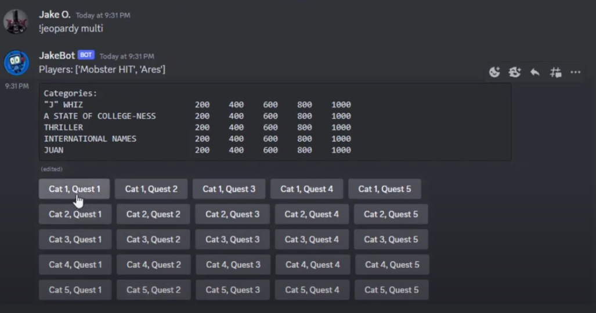
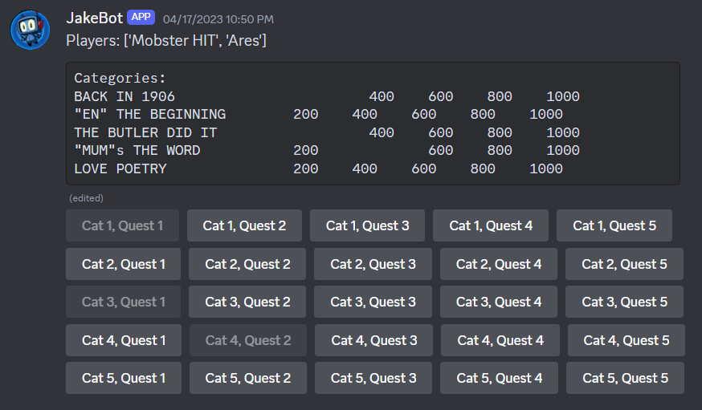

Discord Bot - Jeopardy!
Software Engineering project developing a Discord Bot
Project Details / Background
For my Software Engineering class I worked in a team of 6 students to build a multi-feature Discord bot.
We each focused on making our own features of the bot and worked together using Kanban and Agile strategies along with
feature branching for our Git workflow.
My feature of the bot was for letting users play a game of Jeopardy within their text channels.
Users have the choice between starting a solo game or a multiplayer game to compete with their friends. For solo games,
the user can choose how many categories they want to play with which would let them choose the "length" of the game.
In solo play, the user is also given hints if they get the answer wrong, each failed attempt would reveal more letters of
the correct answer similar to Wheel of Fortune.
In multiplayer games the host would run the command to start a lobby, where other players can
click to join the lobby, once the timer ends the game is formed with all the players that entered the lobby. The gameplay
here is much more similar to the TV show where the first player to buzz in goes. The scores at the end of the game are tracked
for the user account inside a database so users can keep track of their total winnings.
When each game is queued up, the bot will create an id for the game and add players to it
and make a database for the questions which get pulled from a massive collection of Jeopardy questions from over 30 years.
So each game randomly picks however many categories, then picks the 5 questions for each of those categories.
Image Gallery

Screenshot of the gameboard. Two players are in the lobby and player 1 is choosing their question.

Game is halfway over, after each round the gameboard is updated to reflect questions being removed.